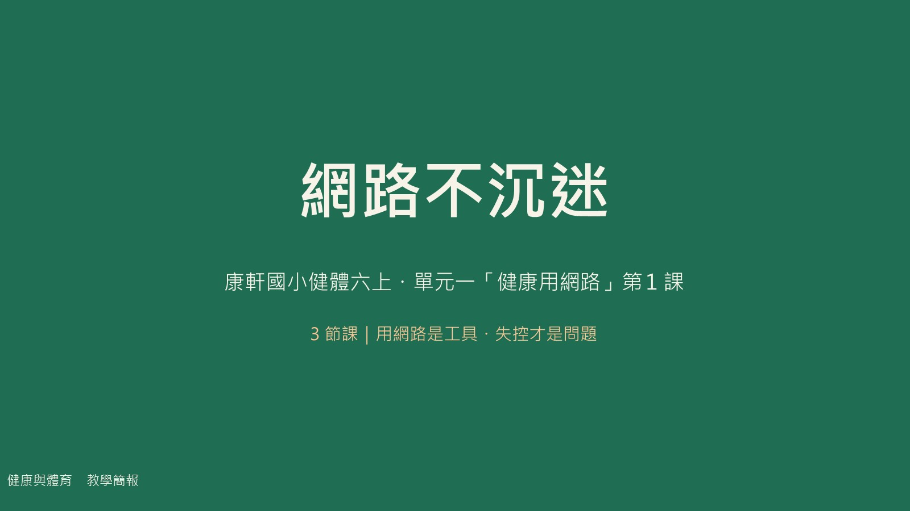

每一節都有一個「動手的任務」和一個「要記住的概念」。
網路四大功能、沉迷警訊，填寫「自我篩檢量表」學習單。
小傑的惡性循環、遠離五招，規畫放學後作息時間表。
「我訊息」演練、訂定網路使用規範、10 題隨堂測驗。
三節課 120 分鐘。第一節正向使用與自我覺察；第二節沉迷影響與遠離方法；第三節「我訊息」溝通與自我管理。
| 時間 | 活動 | 教學說明 |
|---|---|---|
| 5 分 | 引起動機 | 「你今天的網路足跡」：請學生說出今天用網路做了什麼，教師板書分類。 |
| 12 分 | 活動1：網路的正向使用 | 引導閱讀課本並討論：你和家人平常在哪些狀況下使用網路？使用網路帶給你哪些正面幫助？歸納查詢、聯繫、學習、休閒四大功能。 |
| 15 分 | 活動2：你迷「網」了嗎？ | 說明沉迷的定義與警訊；填寫「網路使用習慣自我篩檢量表」學習單，自覺檢視使用習慣。 |
| 8 分 | 歸納與預告 | 歸納「用網路是工具、失控才是問題」；播放【你也是藍光人嗎？】片段；預告下節討論沉迷的影響。 |
| 時間 | 活動 | 教學說明 |
|---|---|---|
| 5 分 | 引起動機 | 複習提問：上週的自我篩檢，你發現了什麼？ |
| 15 分 | 活動3：網路沉迷的影響 | 以「小傑的故事」說明沉迷的惡性循環；播放【我的第二人生】，統整沉迷對生理、心理、社會的影響。 |
| 15 分 | 活動4：遠離迷「網」 | 歸納避免沉迷的方法（訂時間、先做事、替代活動、睡前不用、定時休息）；完成「規畫作息時間表」學習單。 |
| 5 分 | 作業指派 | 回家與家人討論並訂定「網路使用規範」，完成學習單帶回。 |
| 時間 | 活動 | 教學說明 |
|---|---|---|
| 5 分 | 引起動機 | 分享上週與家人訂規範的經驗：順利嗎？遇到什麼困難？ |
| 15 分 | 活動5：溝通方法「我訊息」 | 講解我訊息句型（事件＋感受＋影響＋期望）；播放「我訊息」影片；上臺演練「與家人溝通網路使用時間」。 |
| 15 分 | 活動6：改進網路使用習慣 | 運用「自我管理與監督」：寫下要改進的習慣、訂定目標，分組討論改進方法並記錄在學習單。 |
| 5 分 | 總結與評量 | 完成 10 題隨堂測驗（線上測驗或測驗卷）；布置「一週網路健康計畫」課後延伸。 |
| 學生常見想法 | 教學澄清 |
|---|---|
| 「我每天上網，所以我有沉迷。」 | 沉迷的判準是「失控＋影響生活」，不是有沒有使用；適度且自控的使用是健康的。 |
| 「網路沉迷只是浪費時間，沒什麼大不了。」 | 沉迷會影響視力、睡眠、體能、情緒與人際，是整體健康的問題。 |
| 「訂規範就是被處罰。」 | 規範是和家人共同約定的保護線，讓界線清楚、減少衝突，也是練習自律的機會。 |
| 「靠意志力就戒得掉。」 | 改變習慣要靠具體策略：計時、替代活動、環境安排與家人支持，光靠想法很難持續。 |
| 「我訊息就是在抱怨。」 | 我訊息描述事件與自己的感受，不指責對方，比責罵更容易讓人聽進去。 |
評量方式：口頭發表（各活動中）、自我篩檢量表的完成與討論（第一節）、作息時間表與我訊息演練（實作評量）、隨堂測驗 10 題（第三節末，答對 7 題以上通過）。
需要協助的學生：提供作息表範例與「我訊息」句型提示卡，先完成「一個方法＋一句我訊息」即可；規範學習單可改與導師或同學互相約定。
學有餘力的學生：設計一份給全校的「網路健康」宣導海報或短劇，比較不同做法的長期效果。
課後延伸：一週網路健康計畫（記錄上網時間、週末與家人回顧簽名）、和家人一起看一部推薦影片並討論家裡可以訂什麼規範。
上臺發表前，先在這裡練一遍。兩個小活動都對應課堂活動。
連續判斷 8 個情境：這樣的使用恰當嗎？判斷完說說你的理由。
按「事件→感受→影響→期望」的順序，點選下面四句話（亂數排列）。
用左右鍵或下方縮圖換頁。第 9、12、16、18 頁是含旁白的動畫，點播放即可。

每題答完立刻看解析。10 題滿分 100 分，答對 7 題以上就過關，成為「網路小達人」。
搭配課程使用的公開影片，點擊會在新分頁開啟。影片版權屬原作者所有。
建議順序：藍光人（覺察）→ 我的第二人生（影響）→ 毒不添下（方法）→ 我訊息（溝通）→ 新北市宣導（總結）。可作為課前預習或課後複習。
抽籤點名、倒數計時，直接投影使用。
兩人一室，搶答 10 題。答對 +1 分、答錯不扣分，先答對的人拿下這一題。學生用另一台裝置連進同一個 Wi-Fi 就能自動配對。
start-battle.bat 啟動伺服器。
學生：開 http://老師電腦IP:8765/battle.html，輸入名字即可配對。
規則：每題 20 秒，答錯換對手答；10 題結束結算勝負。
上課投影、張貼、做學習單都可以用。點圖可看原圖。
要列印、要修改都可以直接用。